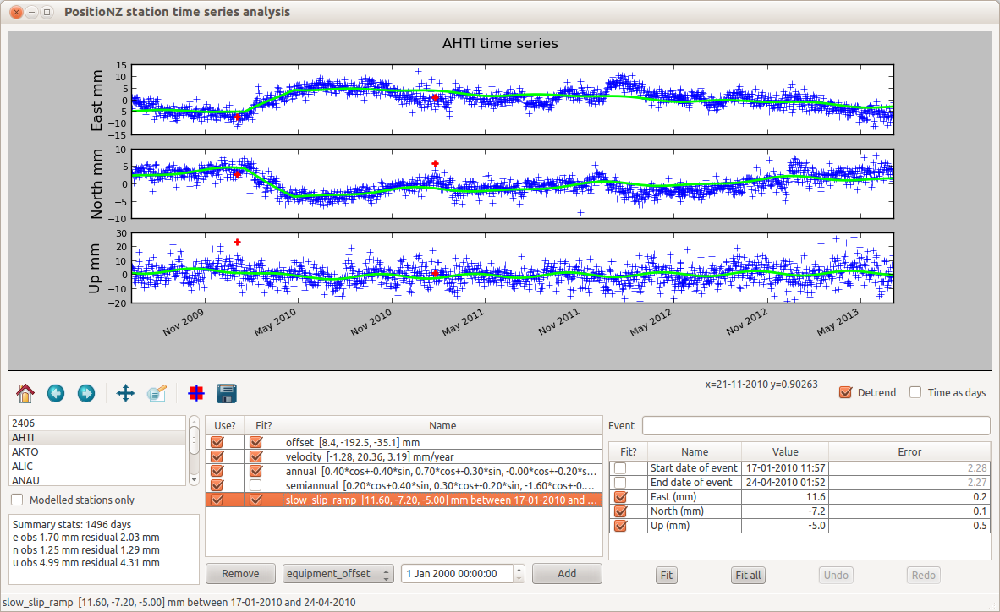

Using the station prediction model editor requires the following components (versions listed are those it is built with - others may work!)
As currently built the editor modules (spm_editor.py, stn_pred_model.py, ellipsoid.py) should be installed in a single directory with the models in a "models" subdirectory, and the time series data in a "timeseries" subdirectory.
To run the editor just use "python spm_editor.py".
The editor may be configured by editing the spm_editor.cfg file that is in the same directory as the editor itself. The configuration allows setting the templates for the names of model files, backup files, and time series files. Each file must include the string {code} that will be substituted by the four letter station code. The backup file may also include the strings {fdate} and {fdatetime}, that will be replaced with the file date, or file date/time to create backup file names. The editor assumes that all time series files are in the same directory. A sample configuration file is:
# Configuration data for the Station Prediction Model editor
#
# model_dir is the directory in which models are located
model_file stations/{code}_spm.xml
model_backup_file {model_file}.{fdatetime}.backup
timeseries_file timeseries/{code}_igs08_xyz.dat
The station prediction model editor is used to view CORS station time series and develop station prediction models representing the time series. Models can have the following components:
Station prediction models are stored as XML files in the stations directory (by default).
Time series data are stored text files in the timeseries directory. The time series are daily IGS08 solutions. The file is formatted as the following example:
name epoch x y z flag GISB 2002-06-28T12:00:00 -4985376.1519 184022.2282 -3960830.1338 A GISB 2002-06-29T12:00:00 -4985376.1555 184022.2283 -3960830.1362 A GISB 2002-06-30T12:00:00 -4985376.1547 184022.2259 -3960830.1330 A GISB 2002-07-01T12:00:00 -4985376.1536 184022.2258 -3960830.1338 A GISB 2002-07-02T12:00:00 -4985376.1505 184022.2275 -3960830.1295 A GISB 2002-07-03T12:00:00 -4985376.1592 184022.2264 -3960830.1369 A GISB 2002-07-04T12:00:00 -4985376.1539 184022.2272 -3960830.1318 A ...
Columns are separated by arbitrary whitespace. The name column must match the station code. The flag column is ignored and not required.
usage: spm_editor [-h] [-c CONFIG_FILE] [-m DEFAULT_MODEL_FILE]
[-t DEFAULT_TIMESERIES_FILE]
[model_file] [timeseries_file]
View and update GNSS time series models
positional arguments:
model_file Station prediction model XML file
timeseries_file XYZ time series to use with the model
optional arguments:
-h, --help show this help message and exit
-c CONFIG_FILE, --config_file CONFIG_FILE
Configuration file for the job
-m DEFAULT_MODEL_FILE, --default_model_file DEFAULT_MODEL_FILE
Default file name for the model file - must include
{code}
-t DEFAULT_TIMESERIES_FILE, --default_timeseries_file DEFAULT_TIMESERIES_FILE
Default file name for the model file - must include
{code}
Optionally a SPM model file and timeseries file can be specified on the command line. Otherwise it will find all time series files (based on the configuration file time series filename pattern) and then look for corresponding station prediction models (or create new model files if there is not already one).
The command line options also allow specifying a configuration file (default is ~/.spm_editor.cfg, or a spm_editor.cfg file in the same directory as the program). The model_file and timeseries_file configuration options can be overridden on the command line.
If the model file is not specified on the command line, then the codes of the matching time series files are displayed in a dropdown list. When a code is selected the corresponding time series data are displayed (as E,N,U offsets from a reference point), and the station prediction model (SPM) is loaded, if it exists. The editor can be used to update the model, adding and removing components, and fitting the components to the timeseries. It can also be used to select bad observations that should be removed from the time series.
The top half of the editor displays the time series for the selected stations, and the bottom has from left to right:
Directly under the plot are a set of controls for managing the plots. From right to left these are:
GUI improvements: Fix the handling of the include/exclude control with the other plot control buttons and the plot cursor state. Add a list of tectonic events to the plot that can by used to select an event for a new component. Option to display an individual component on the plot. Display the location of the station.